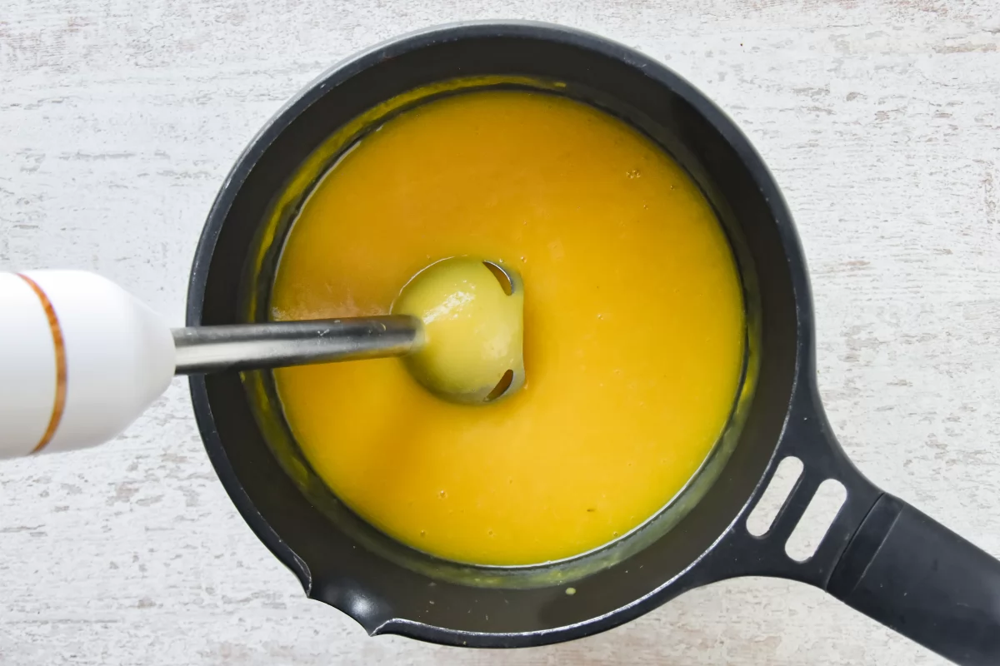

Crema de calabaza
Crema de calabaza
Recetas
>> Crema de calabaza
¿Que es?
¿Que necesito?
¿Como se hace?
Información Destacada
- Tiempo de preparación: 15 mins
- Tiempo de cocinado: 20 mins
- Tiempo total: 35 mins
- Raciones: 2
- Categoría: Entrante
- Tipo de cocina: Española
- Calorias por ración: 146 kcal

Ingredientes para 2 personas
- 375 g de calabaza
- 50 g de patatas
- 50 g de cebolla
- 1 diente de ajo
- 1 cucharada de aceite de oliva
- ½ cucharadita de comino en polvo
- ½ cucharadita de cúrcuma en polvo
- 500 ml de caldo de verduras
- Sal
- Pimienta blanca molida

Preparación
- Pelamos y cortamos la calabaza
- Cortamos las patatas, la cebolla y prensamos el ajo
- Sofreímos y condimentamos la cebolla y el ajo
- Incorporamos al sofrito la calabaza y las patatas
- Vertemos el caldo y hervimos
- Trituramos y salpimentamos, y servimos la crema decorada al gusto
